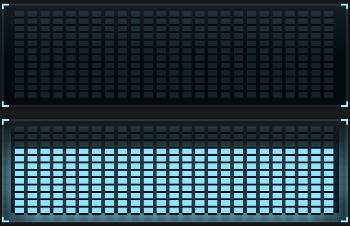
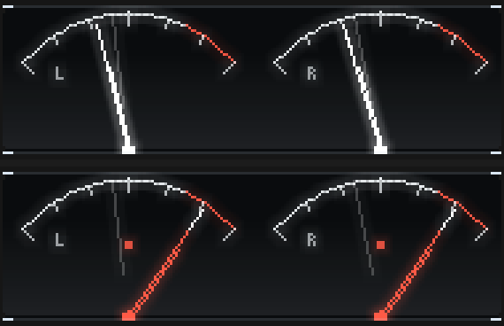
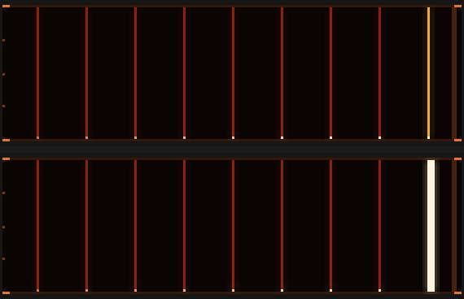
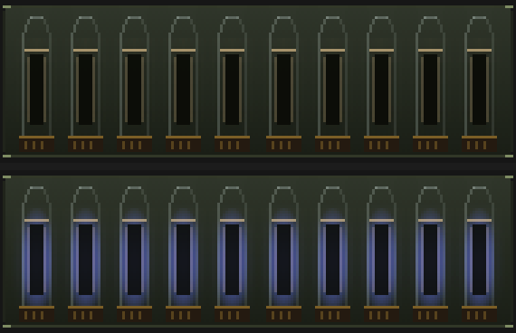
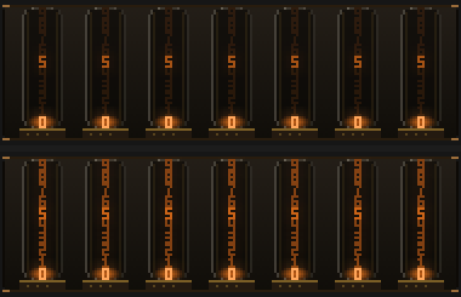
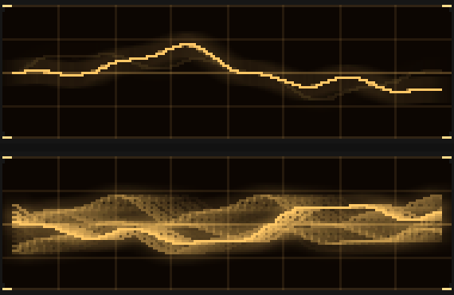
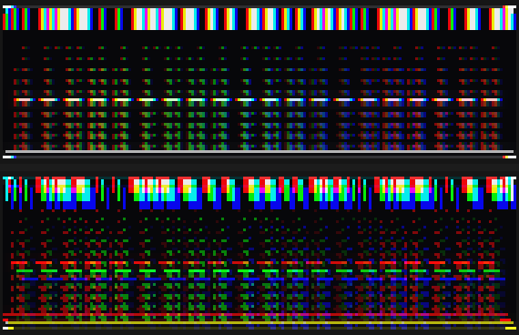
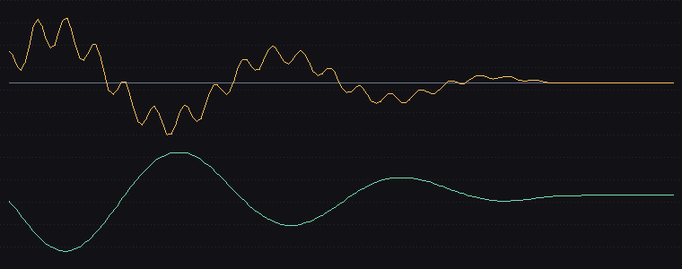
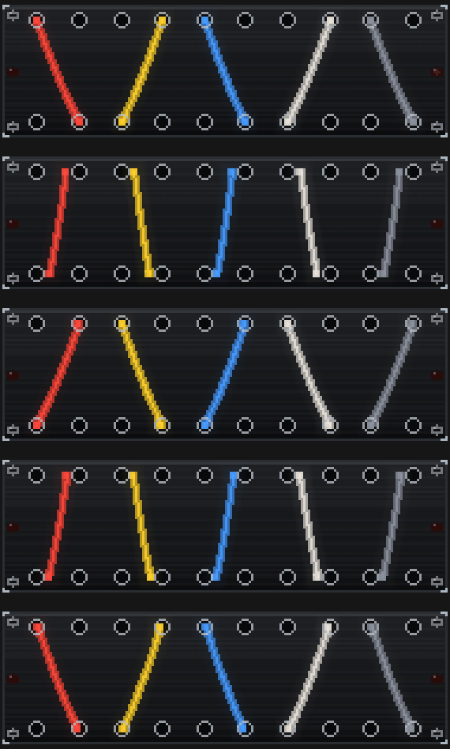
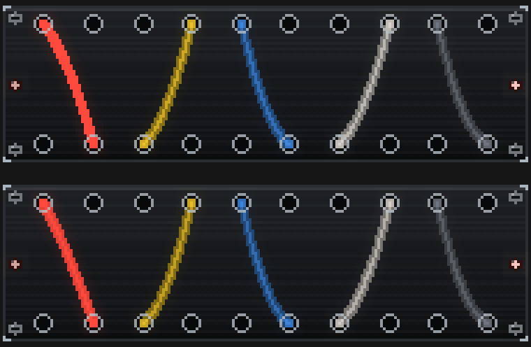

Nine flourishes, one per family. Each fires on a rare, exceptional hit — about one every 30 seconds on real music, measured on a 119-second capture of nine varied tracks — and each is the fault or the ritual that belongs to its own instrument.
Every one has a pixel-level test and was checked against deliberate mutations, so what
is below is not "does it work" but "is it right". Item 7 is the one I would change first.
Regenerate any of these with cargo test --release dump_flourishes -- --ignored.
Every segment lights, then drains back to the reading.

What I want your eyes on: Whether the drain reads as a self-test sequence or just as a bright flash.
Both needles driven to the end stop over 900ms with the OVER lamps lit.

What I want your eyes on: Whether 900ms is too slow - a real slam is faster, but faster was hard to see.
Three columns of full-height energy written into the history, so it scrolls away as data.

What I want your eyes on: Whether three columns is the right width. One read as merely a brighter column.
A cold blue haze fills every envelope - the wrong colour for the display, which is the point.

What I want your eyes on: Whether the blue is cold enough to read as a fault rather than as a colourway change.
The unused digits all glow, as a badly-driven tube's do. 520ms, the shortest of the nine.

What I want your eyes on: Whether the live digit still clearly reads as the value. Measured at a 32% share of its legibility headroom, but that is a number, not an opinion.
The sweep free-runs, so the trace slides a screen-width of phase and the phosphor smears every phase it passes through.

What I want your eyes on: Whether the smear is too heavy. It is what a real scope does, but it does fill the screen.
A plate slips 3px vertically, so every element splits into red/green/blue ghosts.

What I want your eyes on: THE ONE I MOST WANT JUDGED. It is the strongest of the nine by a distance. MISREG_Y comes down from 3px on one word.
Speed instability on the transport: 1.1Hz wow with 8.5Hz flutter riding on it, and the wow reaching the tape slack.

What I want your eyes on: Nothing to judge in a still - this one only exists in motion. The plot is here as evidence that the mechanism is right; judge the look in the running app.
Every cable slides to the other jack of its pair and back, so the chevron mirrors itself.

What I want your eyes on: Whether the plugs sitting mid-air between sockets (rows 2 and 4) read as a cable in transit or as a mistake.
Not a flourish - a fix. The bass cable was pinned at full deflection on 64%, 96% and 100% of frames across three real-music captures, so its sag carried no information. The window now reaches full travel at a group level of 0.80 instead of 0.62.

What I want your eyes on: Whether the panel now reads as too slack. Pinning is 0% on every cable at both widths, but it cost about a quarter of the separation between cables. An intermediate value keeps more separation and leaves the bass cable pinned 29% of the time - say which trade you prefer.